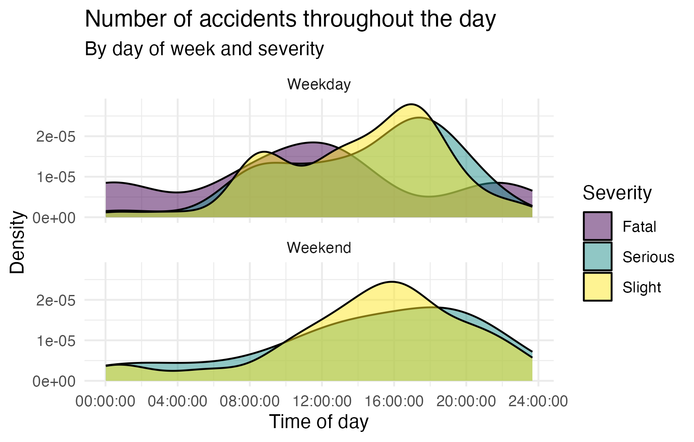
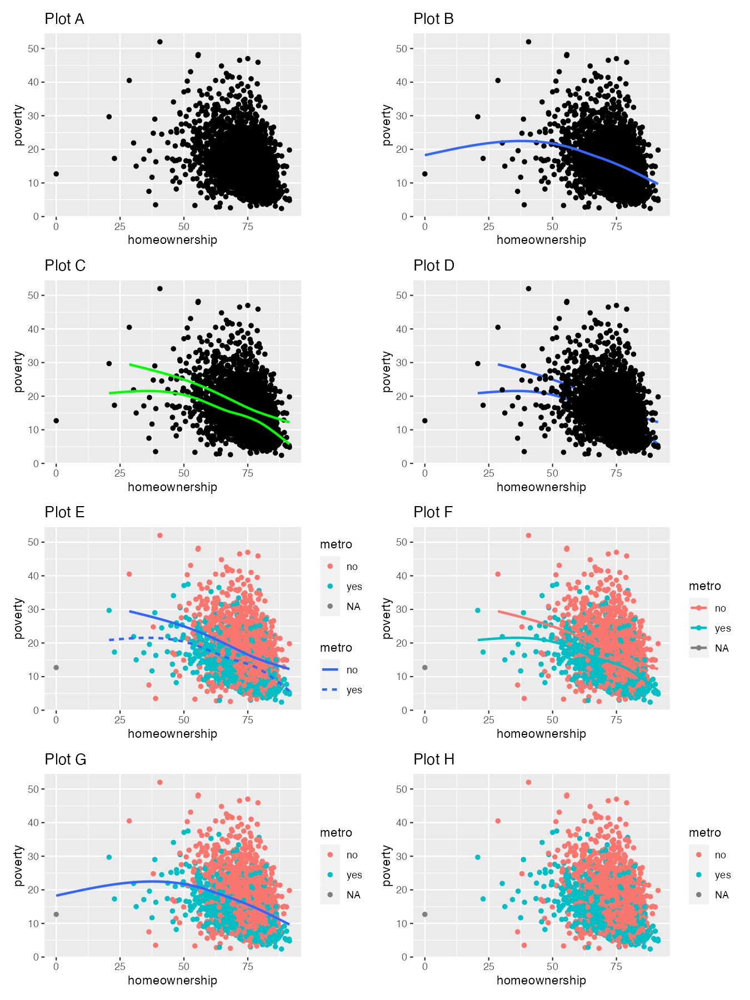

library(tidyverse)Homework 1
Homework
Important
This homework is due Wednesday, February 8 at 11:59pm ET.
Getting started
Go to the info3312-s23 organization on GitHub. Click on the repo with the prefix hw-01. It contains the starter documents you need to complete the lab.
Clone the repo and start a new project in RStudio. See the Lab 0 instructions for details on cloning a repo and starting a new R project.
Packages
Guidelines + tips
As we’ve discussed in lecture, your plots should include an informative title, axes should be labeled, and careful consideration should be given to aesthetic choices.
Remember that continuing to develop a sound workflow for reproducible data analysis is important as you complete this homework and other assignments in this course. There will be periodic reminders in this assignment to remind you to knit, commit, and push your changes to GitHub. You should have at least 3 commits with meaningful commit messages by the end of the assignment.
Note
Note: Do not let R output answer the question for you unless the question specifically asks for just a plot. For example, if the question asks for the number of columns in the data set, please type out the number of columns. You are subject to lose points if you do not.
Workflow + formatting
Make sure to
- Update author name on your document.
- Label all code chunks informatively and concisely.
- Follow the Tidyverse code style guidelines.
- Make at least 3 commits.
- Resize figures where needed, avoid tiny or huge plots.
- Turn in an organized, well formatted document.
Exercise 1
Reverse-engineering the grammar of graphics. COVID-19 has been a thing for the past 2+ years. Data visualizations have proven extremely valuable for communicating trends regarding the pandemic to the public. For the main plot in this article, write down the components of its grammar of graphic. Don’t worry about identifying the correct functions in ggplot2 used to generate the graph. Instead, focus on recording the key elements of a plot so you could communicate it to someone else.
Now is a good time to render, commit, and push. Make sure that you commit and push all changed documents and your Git pane is completely empty before proceeding.
Exercise 2
Road traffic accidents in Edinburgh. Next we’ll look at traffic accidents in Edinburgh. The data are made available online by the UK Government. It covers all recorded accidents in Edinburgh in 2018 and some of the variables were modified for the purposes of this assignment. The data can be found in the dsbox package, and it’s called accidents. You can find out more about the dataset by inspecting its documentation with ?accidents and you can also find this information here.
Recreate the following plot, and interpret in context of the data.

Now is a good time to render, commit, and push. Make sure that you commit and push all changed documents and your Git pane is completely empty before proceeding.
Exercise 3
NYC marathon winners. The New York City Marathon is an annual marathon that courses through the five boroughs of New York City. Marathon times of runners in the Men and Women divisions of the New York City Marathon between 1970 and 2020 can be found in the nyc_marathon dataset in the openintro package. You can find out more about the dataset by inspecting its documentation with ?nyc_marathon and you can also find this information here.
Create a histogram and a box plot of the distribution of marathon times of all runners in the dataset. What features of the distribution are apparent in the histogram and not the box plot? What features are apparent in the box plot but not in the histogram?
Create a side-by-side box plots of marathon times for men and women. Use different colors for the each of the box plots – do not use the default colors, but instead manually define them (you can choose any two colors you want). Based on the plots you made, compare the distribution of marathon times for men and women.
What information in the above plot is redundant? Redo the plot avoiding this redundancy. How does this update change the data-to-ink ratio?
Visualize the marathon times of men and women over the years. As is usual with time series plot, year should go on the x-axis. Use different colors and patterns to represent the times for men and women. Make sure your colors match those in the previous part. Once you have your plot, describe what is visible in this plot but not in the others.
Now is a good time to render, commit, and push. Make sure that you commit and push all changed documents and your Git pane is completely empty before proceeding.
Exercise 4
US counties. The following questions use the county dataset in the openintro package. You can find out more about the dataset by inspecting its documentation with ?county and you can also find this information here.
What does the following code do? Does it work? Does it make sense? Why/why not?
ggplot(county) + geom_point(aes(x = median_edu, y = median_hh_income)) + geom_boxplot(aes(x = smoking_ban, y = pop2017))Recreate the R code necessary to generate the following graphs. You will need to create 8 separate plots for this exercise. Note that wherever a categorical variable is used in the plot, it’s
metro.

Now is a good time to render, commit, and push. Make sure that you commit and push all changed documents and your Git pane is completely empty before proceeding.
Exercise 5
Napoleon’s march. The instructions for this exercise are simple: recreate the Napoleon’s march plot by Charles John Minard in ggplot2. The data is provided as a list, saved as napoleon.rds.
Read it in using read_rds(). This object has three elements: cities, temperatures, and troops. Each of these is a data frame, and the three of them combined contain all of the data you need to recreate the visualization. Your goal isn’t to create an exact replica of the original plot, but to get as close to it as you can using code you understand and can describe articulately in your response.
I’ll be the first to say that if you Google “Napoleon’s march in ggplot2”, you’ll find a bunch of blog posts, tutorials, etc. that walk you through how to recreate this visualization with ggplot2. So you might be thinking, “why am I being asked to copy something off the internet for my homework?” Well, this is an exercise in (1) working with web resources and citing them properly, (2) understanding someone else’s ggplot2 code and reproducing their work, (3) describing what that code does in your own words, and finally (4) putting some final touches to make the final product your own. Some more guidelines below:
- You should make sure your response properly cites all of the resources you use. I’m defining “use” to include “browse, read, get inspired by, or directly borrow snippets of code from”. You don’t need to worry about formal citations, it’s okay to make a list with links to your resources and provide a brief summary of how you used each one.
- For this exercise, you’re asked to describe what your code does (instead of interpreting the visualization, since we already did that in class). If you write the code, it should be straightforward for you to describe it. If you borrow any code from outside resources, you need to understand what that code does, and describe it, in your own words. (This is important, you’re allowed to use found code, but you are not allowed to copy someone’s blog post or tutorial as your description of their code.)
- Finally, you should personalize the visualization with your own touch. You can do this in a myriad of ways, e.g., change colors, annotations, labels, etc. This change should be made to make the plot more like the original in some way. You need to explicitly call out what change you made and why you made it.
Render, commit, and push one last time.
Make sure that you commit and push all changed documents and your Git pane is completely empty before proceding.
Wrap up
Submission
- Go to http://www.gradescope.com and click Log in in the top right corner.
- Click School Credentials \(\rightarrow\) Cornell University NetID and log in using your NetID credentials.
- Click on your INFO 3312 course.
- Click on the assignment, and you’ll be prompted to submit it.
- Mark all the pages associated with exercise. All the pages of your lab should be associated with at least one question (i.e., should be “checked”).
- Select the first page of your .pdf submission to be associated with the “Workflow & formatting” question.
Grading
- Exercise 1: 10 points
- Exercise 2: 10 points
- Exercise 3: 10 points
- Exercise 4: 10 points
- Exercise 5: 10 points
- Total: 50 points